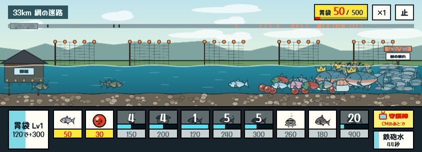
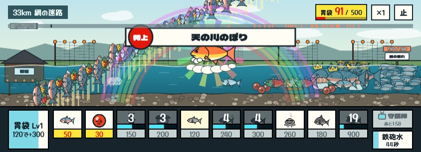

きみは鮭。生まれた川まで、あと268km。
カモメもクマも板前も、みんなきみを食べる気まんまん。仲間の鮭をどんどん出して、押しかえしながら川をのぼろう。

右上の×1を押すと2倍速、止でひと休み。
鮭の守護神さまは、ただいまCMの真っ最中です。

右下の守護神を押して、5秒のCMを見ると、かけつけて敵をまとめてやっつけてくれる。何がくるかは来てからのお楽しみ。よべるのは2分に1回。
勝っても負けても、イクラがもらえる。はじめの仲間は、ステージをクリアすると増えていく。
勝てないときは、強くしてからもう一度。鮭は何度でものぼる。
ある2匹の仲間は、合体してもっと強くなる。どの2匹かは、ひみつ。2匹を同時に出撃させてみるといいかも?